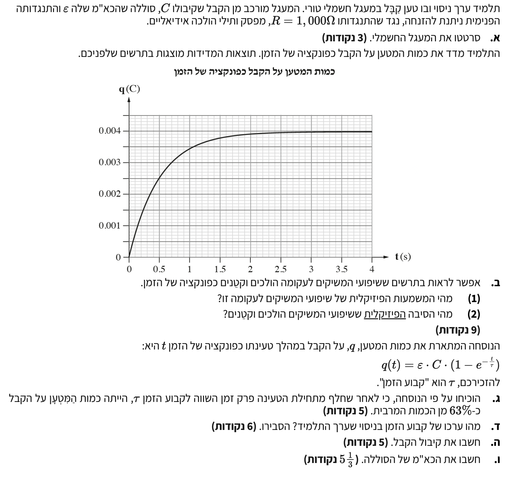

פתרון מודרך, צעד-אחר-צעד

נשרטט את המעגל החשמלי הטורי. סדר הרכיבים אינו משנה כל עוד כולם מחוברים בטור בלולאה אחת.
מסקנה: תרשים המעגל מוצג לעיל. המעגל כולל סוללה, מפסק פתוח, נגד וקבל המחוברים כולם בטור.
מבחינה מתמטית, שיפוע המשיק לגרף של פונקציה מבטא את הנגזרת של הפונקציה. בגרף של המטען \( q \) כפונקציה של הזמן \( t \), הנגזרת היא קצב שינוי המטען בזמן.
על פי הגדרת הזרם החשמלי, קצב זרימת המטען דרך חתך רוחב של מוליך הוא הזרם החשמלי. לכן, הנגזרת \( \frac{dq}{dt} \) שווה לזרם החשמלי הרגעי במעגל, אותו נסמן ב- \( i(t) \).
(1) המשמעות הפיזיקלית של שיפועי המשיקים לגרף המטען-זמן היא הזרם החשמלי הרגעי במעגל החשמלי.
כאשר סוגרים את המפסק, הסוללה מתחילה להזרים מטענים, והקבל מתחיל להיטען. מתוך הגדרת הקיבול המדויקת מדף הנוסחאות, \( C = \frac{Q}{V} \), נוכל לחלץ את המתח על הקבל בכל רגע: \( V_C = \frac{q}{C} \). מנוסחה מפותחת זו נובע שככל שהמטען על הקבל (\( q \)) גדל, כך גם המתח בין לוחותיו (\( V_C \)) גדל.
כעת נשתמש בנוסחה למתח בין שתי נקודות במעגל חשמלי מדף הנוסחאות: \( V_{AB} = \Sigma IR - \Sigma \varepsilon \). ניישם זאת על מסלול סגור (לולאה שלמה), שבו נקודת ההתחלה והסיום מתלכדות ולכן הפרש הפוטנציאלים הוא אפס (\( V_{AA} = 0 \)). סכום הכא"מים בלולאה הוא \( \varepsilon \), וסכום מפלי המתח כולל את מתח הנגד (\( i(t) \cdot R \)) ואת מתח הקבל (\( V_C(t) \)). לכן, המשוואה שמתקבלת היא:
נבודד את הזרם במעגל, \( i(t) \):
מהמשוואה ניתן לראות כי ככל שהקבל נטען ו- \( V_C \) עולה, ההפרש \( (\varepsilon - V_C) \) קטן. מכיוון שהתנגדות הנגד \( R \) קבועה, הזרם החשמלי \( i(t) \) חייב לקטון.
(2) ככל שהקבל נטען, המתח עליו עולה ומתנגד למתח הסוללה. כתוצאה מכך, המתח על הנגד קטן, ולפיכך הזרם במעגל (שהוא שיפוע המשיק) הולך וקטן.
על פי הגדרת הקיבול מהדף \( C = \frac{Q}{V} \), המטען המרבי מתקבל בסוף תהליך הטעינה, כאשר מתח הקבל משתווה לכא"מ הסוללה (\( V = \varepsilon \)). מתוך פיתוח הקשר נקבל כי המטען המרבי הוא \( Q_{max} = \varepsilon \cdot C \). נציב את הזמן \( t = \tau \) בתוך נוסחת המטען הנתונה בשאלה:
נחשב את הערך של הביטוי בסוגריים בעזרת מחשבון. נזכור כי מספר אוילר \( e \approx 2.718 \):
נציב חזרה ונקבל קשר למטען המרבי. מכיוון ש- \( \varepsilon \cdot C \) הוא המטען המרבי (נסמנו \( Q_{max} \)):
מסקנה: הוכחנו כי לאחר פרק זמן \( t = \tau \), המטען על הקבל הוא \( q \approx 0.63 \cdot Q_{max} \), כלומר כ- 63% מערך המטען המרבי.
נתבונן באסימפטוטה האופקית של הגרף, כאשר הזמן \( t \) גדול. ניתן לראות כי ערך המטען מתייצב על ערך מקסימלי של:
נחשב מהו 63% מהמטען המרבי.
כעת נלך לציר ה-Y בגרף, נמצא את הערך המקורב של \( 0.0025 \text{ C} \), ונבדוק איזה זמן \( t \) בציר ה-X מתאים לו.
מסקנה: הזמן המתאים להגעת המטען ל-63% מערכו המרבי הוא חצי שנייה. לכן, ערכו של קבוע הזמן בניסוי הוא: \( \tau = 0.5 \text{ s} \).
בדף הנוסחאות מופיעה נוסחת המתח הרגעי בטעינת קבל ובה המעריך הוא \( \frac{-t}{RC} \). לעומת זאת, בנוסחה המקבילה שניתנה לתלמיד בשאלה עבור המטען, המעריך נכתב כ- \( \frac{-t}{\tau} \). מתוך השוואת ביטויים אלו נוכל לפתח ולהסיק את הקשר לקבוע הזמן: \( \tau = R \cdot C \).
נבודד את הקיבול \( C \) מהקשר שפיתחנו עבור קבוע הזמן, ונציב את הערכים הידועים:
מסקנה: קיבול הקבל הוא \( C = 5 \cdot 10^{-4} \text{ F} \) (כלומר \( 500 \mu\text{F} \)).
בסוף תהליך הטעינה (\( t \to \infty \)), הזרם פוסק, וכל מתח הסוללה נופל על הקבל. לכן המתח המרבי על הקבל שווה לכא"מ: \( V_{max} = \varepsilon \).
מתוך הגדרת הקיבול מדף הנוסחאות \( C = \frac{Q}{V} \), נפתח את המשוואה המבטאת את המטען המרבי: \( Q_{max} = C \cdot \varepsilon \). מכאן, נבודד את הכא"מ \( \varepsilon \) ונציב את הערכים שידועים לנו:
מסקנה: הכא"מ של הסוללה הוא \( \varepsilon = 8 \text{ V} \).